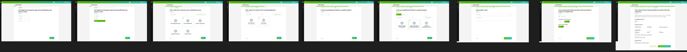
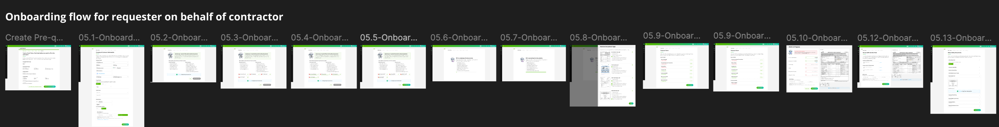
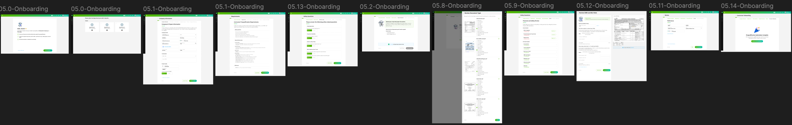
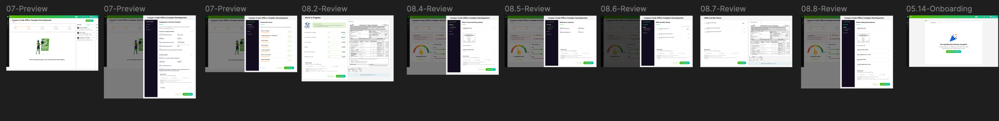

"Three groups. One broken system. The issue wasn't missing functionality."
Contractor prequalification sounds procedural. In practice, it's a coordination problem across three distinct groups, Requestors who initiate qualifications, Contractors who complete them, and Administrators who oversee and approve.
Each group had a different view of the same process. Each had a different set of blockers. And the platform that was supposed to connect them had become the source of their shared frustration.
The impulse was to add features, more status updates, better notifications, more fields. But the features were already there. The problem was structural.
After mapping each stakeholder's journey, a pattern emerged. Every group had most of the information they needed. But the information was presented in a way that required them to work to extract it.
Requestors had to dig for status. Contractors had to commit before understanding requirements. Administrators had to export data to prioritize their queue.
To understand where friction appeared, I mapped the existing qualification journey across requestors, contractors, and administrators. The flow revealed repeated context switching, hidden requirements, and unnecessary decision points that slowed progress for every stakeholder.


ShortFlow restructures qualification into a guided workflow. Instead of exposing every field and requirement upfront, information is progressively revealed based on role, task, and completion status.
ShortFlow restructures qualification into a guided workflow. Instead of exposing every field and requirement upfront, information is progressively revealed based on role, task, and completion status.

The final experience gives stakeholders visibility into qualification status, pending actions, and progress without requiring them to dig through multiple screens.
